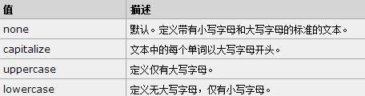
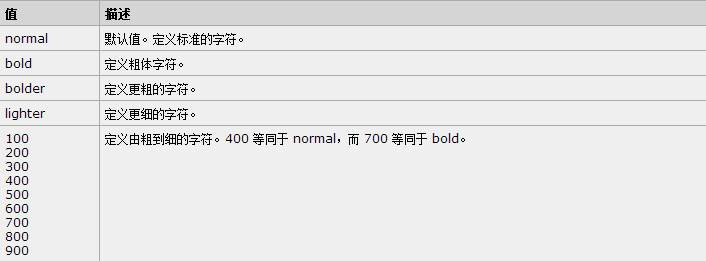

本周早些时候，苹果发布了iPhone 6和iPhone 6 Plus。苹果此次将迅速铺开新款iPhone的销售，到今年年底前这两款新手机预计将在全球115个国家和地区开售。从9月12日开始，美国、法国、加拿大、德国、香港、新加坡、英国、澳大利亚和日本等国家和地区的用户即可预订新款iPhone，而发货时间为9月19日。
9月12日消息，苹果周四公布了iPhone 6和iPhone 6 Plus第二批开售的市场名单。第二批接受预订的时间为9月26日。其中中国大陆仍未在列。
苹果的网站显示，iPhone 6和iPhone 6 Plus第二批开售的市场包括瑞士、意大利、新西兰、瑞典、荷兰、西班牙、丹麦、爱尔兰、挪威、卢森堡、俄罗斯、奥地利、土耳其、芬兰、台湾、比利时和葡萄牙。
在iPhone 6发布会前，一直有传闻称这款苹果新机将采用蓝宝石屏幕。 此后，有消息称仅有高配版iPhone 6才会使用蓝宝石。 直到9月10日的发布会正式揭秘iPhone 6，人们才知道iPhone 6无缘蓝宝石屏幕。
苹果iPhone 6 手机
市场价格： ￥5288起（即将上市）
4G网络：移动TD-LTE，联通TD-LTE，FDD-
3G网络：联通3G（WCDMA），电信3G（CDM ... (2种

本次iPhone 6无缘蓝宝石屏幕，使得GT Advanced股价在发布会后大跌。但是，苹果公司与GT Advanced的合作将不会受到很大的影响，起码目前 Apple Watch采用了蓝宝石屏，而且GT Advanced的蓝宝石工厂得到了苹果公司的大力投资。
give me a second（首字母大写）
half a moment（全部字母大写）
GIVE ME A SECOND（全部字母小写）
利用css样式控制文本的大小font-size
利用css样式控制文本的字体font-family
利用css样式控制文本的风格font-style：normal / italic / oblique
我是粗细文本哦
